Magnetic Field
Pierls' substitution
Hoppings are modified as, \(t_{ij} \rightarrow t_{ij} e^{i\frac{e}{\hbar}\int_i^j \vec{A} \cdot d\vec{r}}\)
\(\vec{B} = B \hat{z}\). We choose gauges \(\vec{A}_1 = (-By, 0, 0)\) and \(\vec{A}_2 = (0, Bx, 0)\).
Since the gauge choice breaks translational symmetry, we use Open Boundary Conditions.
Set \(e = \hbar = 1\).
Tight binding on a 2D square lattice with a single orbital per site
\(h(k_x, k_y) = cos(k_x) + cos(k_y)\)
\(B = 0.5\)
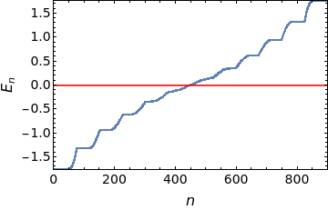
We can plot a histogram to see the density of states.

The eigenvalues are same upto \(10^{-14}\) order for both the gauges.
The spacing increases with magnetic field
\(B = 1\)

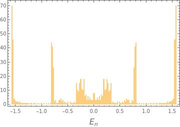
Weyl Semimetals
\( h = t \sin{k_x} \sigma_x + t \sin{k_y} \sigma_y + \sigma_z (t_1 (\cos{k_x} + \cos{k_y}) - m + cos(k_z))\)
First we fix \(k_z = \frac{\pi}{2}\), so that there is no hopping along \(z\) (Chern insulator). Also, \(t = t_1 = m = 1\).
For zero magnetic field
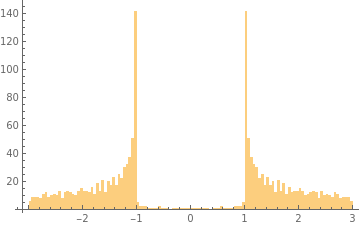
For \(B =1\), the spectrum shifts towards negative energies, and there are Landau levels.
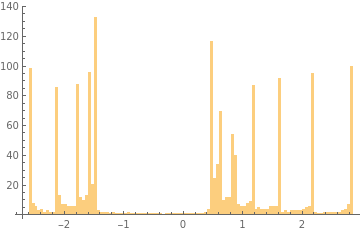
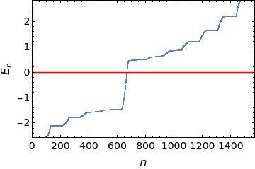
If we plot the energy eigenvalues as function of \(k_z\), we get a plot like the following. 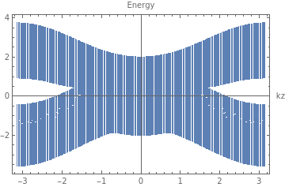
Chern insulator and Quasicrystal
Thin quasicrystal strip
We fix the same parameters as in the previous Hamiltonian, and turn off hopping along \(z\). For a thin quasicrystal strip, the Landau levels are not very prominent. \[y_{up} = \frac{2}{\sqrt{5}+1}(x-1)+4\]
\[y_{down} = \frac{2}{\sqrt{5}+1}(x-2)+2\]
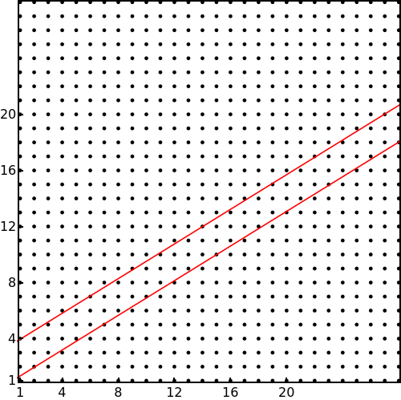
\(9.2 \%\) of sites are inside the quasicrtstal
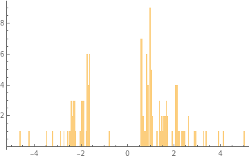
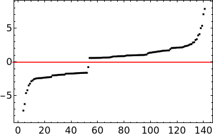
Landau levels are not very prominent
Thick strip
\[y_{up} = \frac{2}{\sqrt{5}+1}(x-1)+10\]
\[y_{down} = \frac{2}{\sqrt{5}+1}(x-2)-4\]

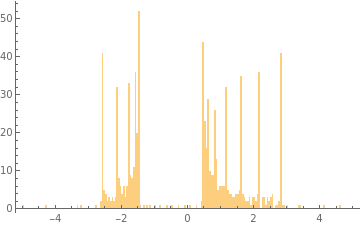
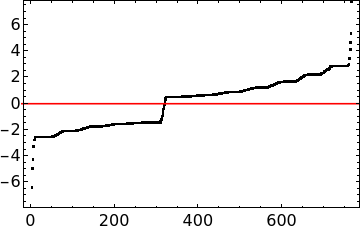